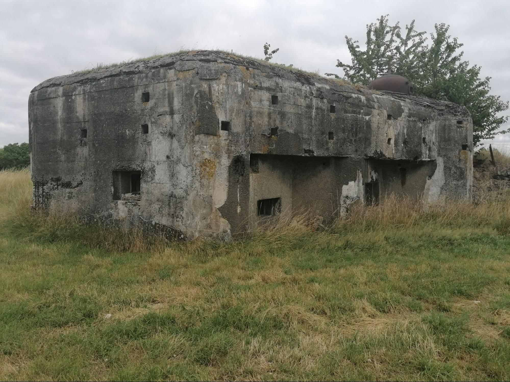
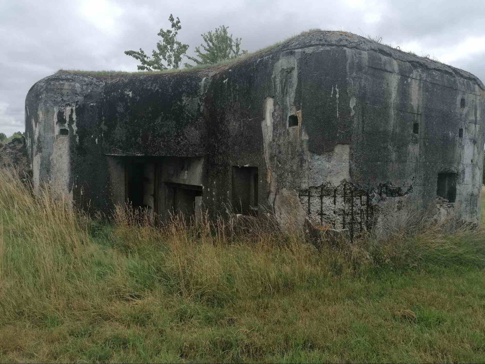
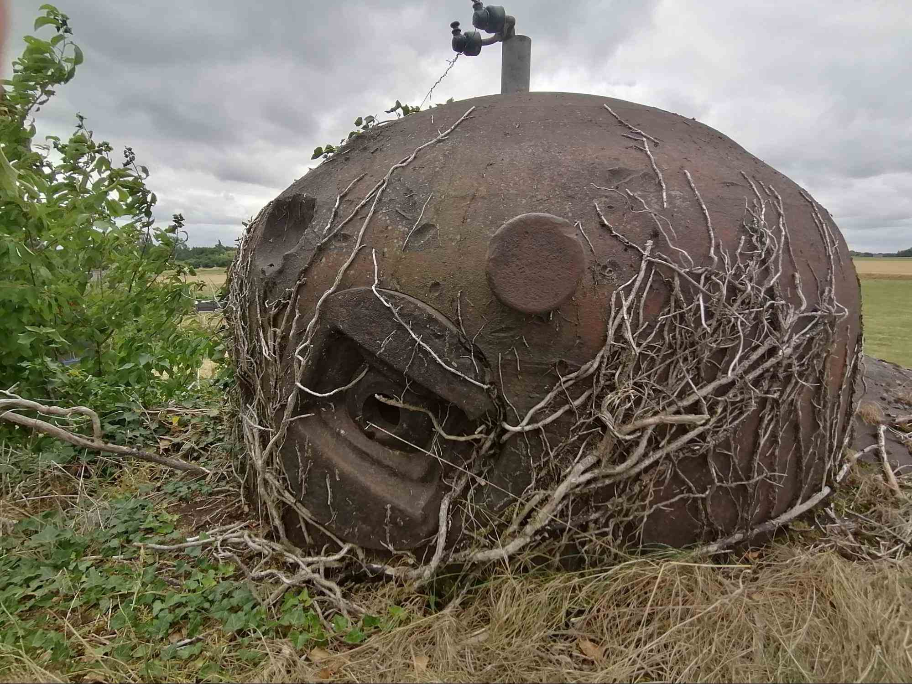

Casemate STG type S10 flanquant à droite construite en 1937.
Casemate de 8 à 12 hommes.
Casemate commandée par le lieutenant Marlier.
En mai 1940, la casemate est sous le feu allemand. De nombreux impacts sont visibles sur la cloche. Sous la pression d’un obus, un créneau pour FM présent sur la cloche a tourné.

La casemate vue du côté flanquement.

L’entrée des troupes et du matériel.

La cloche.